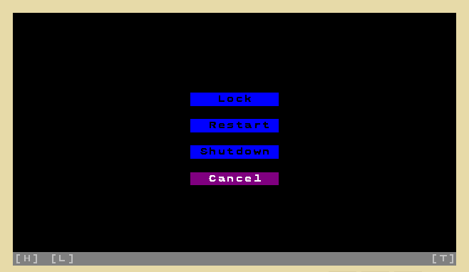

Shutdown - WIN
Shutdown
File:
/apps/shutdown
Shutdown, reboot, lock screen application.

Actions
Lock
Place all desktops into lock screen (if applicable).
Restart
Reboots the computer.
Shutdown
Shuts down the computer after clearing all desktops to black.
Cancel
Closes the Shutdown application.
Remarks
This application automatically quits if another application or system's page is activated.
See also
Default applications
,
WIN
.